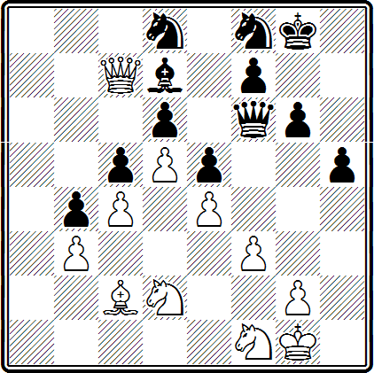
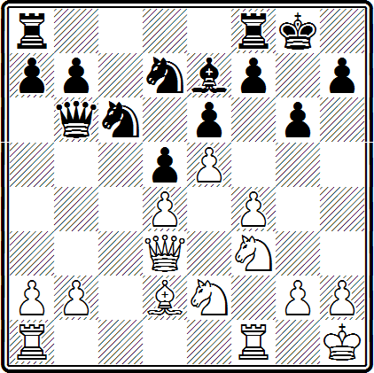
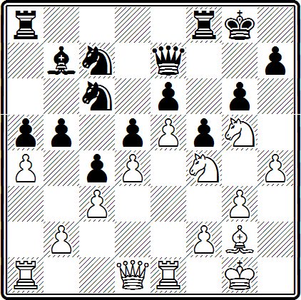
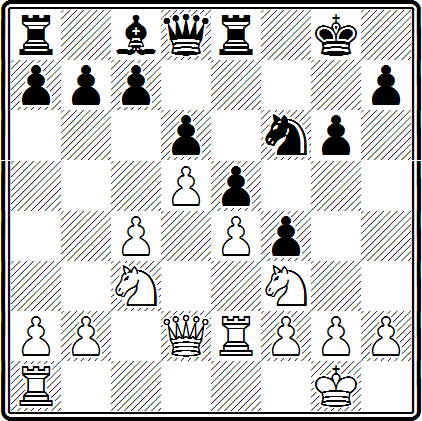
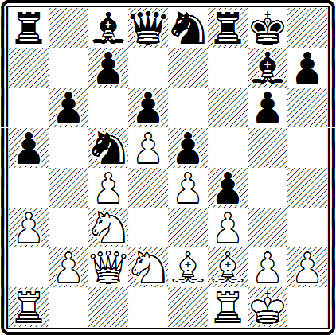

Когда центральные пешки обоих противников блокируют друг друга, говорят, что центр «неподвижен». Одна из таких структур приведена на диаграмме.
Неподвижность центра облегчает планирование игры и позволяет чаще применять типичные методы и приемы борьбы.
При неподвижном центре фланговая атака имеет больше шансов на успех, так как контрудар в центре нанести труднее. Однако центр может це остаться неподвижным.
После движения фланговых пешек f2—f4—f5 и с7—с5 могут произойти размены (еб:f5, d4:c5), в резуль-тате чего пешки в центре становятся подвижными.
Помимо подрыва центра фланговыми пешками, постоянно надо иметь в виду возможность уничтожения центральных пешек путем жертвы фигуры.
Шишов — Бывшев
Рига, 1954 г.
Белый ферзь вторгся в расположение противника, остальные фигуры не могут как будто последовать за ним через «баррикады» пешек. У черных материальный перевес, и компенсации за него не видно.
Но вот белые сыграли
43. f3—f4! . . .
Что теперь делать? Ферзем брать пешку f4 нельзя — гибнет конь d8, а грозит 44. fe, взрывая пешечную цепь.
43. . . . е5:f4
44. е4—е5 d6:е5
45. Kd2—е4 . . .
Конь с большой силой входит в игру.
45. . . . Фf6—h4
46. Фс7:е5 Kf8—h7
47. Ке4:с5 ...
Все три черные пешки (е5, d6, с5), запиравшие центр, теперь устранены, а белые центральные пешки с4 и d5 стали проходными и должны решить исход борьбы.
Черные предприняли отчаянную попытку спасения.
47. . . . f4—f3
48. Фе5—g3 Фh4—d4+
49. Фg3—f2 Фd4:f2+
50. Kpg1:f2.
Через несколько ходов черные сдались.
Зюхтинг — Карльс
Гамбург, 1912 г.
В этой позиции последовал удар пешкой по центральному звену пешечной цепи черных.
15. f4—f5! . . .
Во избежание худшего черные теперь должны примириться с устранением своих пешек из центра: одна из них переходит на фланг, другая уничтожается.
15. . . . е6:f5
В противном случае белые получали сильнейшую атаку на королевском фланге. Например, 15... gf 16. g4 fg 17. Kg5 и т. д.
16. Ке2—f4 Фb6:b2
17. Лf1—b1 Фb2—а3
18. Лb1—b3 Фа3—а4
19. Kf4:d5 . . .
Теперь центральные пешки стали проходными, и их нужно привести в движение.
19. . . . Kd7—b6
20. Kd5:b6 а7:b6
21. Лb3:b6 Ла8—а7
22. d4—d5
Вот во что может превратиться неподвижный центр!
22. . . . Лf8—d8
Теперь черные теряют еще пешку b7, после чего выигрыш белых — лишь вопрос времени. Последовало:
23. Фd3—b5 Кc6—d4
24. Фb5:а4 Ла7:а4
25. d5—d6 Се7—f8
26. Лb6:b7
и белые выиграли.
Пешечная цепь в центре может быть разрушена не только подрывом фланговыми пешками. При неподвижном пешечном центре постоянно необходимо считаться с возможностью жертвы легкой фигуры за две-три пешки. Ведь в этом случае пожертвовавшая сторона получает сильные соединенные проходные пешки в центре. Такие комбинации много раз проводились на практике.
Петросян — Барца
Стокгольм, 1952 г.
Эта позиция получилась после 23-го хода белых. Последним ходом (23. а4) белые стремились лишить пешку с4 достаточной поддержки, т. е. ослабить пешечную цепь черных. На очевидный ответ 23... b4 у них, помимо интересного подрывного хода 24. b3, есть следующее сильное продолжение: 24. Kg:е6 К:е6 25. С:d5 Kd8 26. С:с4, и перевес, несомненно, на стороне белых, имеющих за фигуру три превосходные проходные пешки. Например: 26 ... Kph8 27. К:е6 К:е6 28. d5 Кс5 29. d6 Фd7 30. е6 Фc6 31. Фd4+ Kpg8 32. е7+ Лf7 33. Cd5 Ф:d5 34. Ф:d5 С:d5 35. е8Ф+ Л:е8 36. Л:е8+ Лf8 37. Ле5 Кb3 38. Лd1 и т. д. Характерный вариант, когда ожившие после блокады центральные белые пешки неудержимо рвутся вперед.
Черные воздержались от продвижения 23 ... Ь4 и попали из огня да в полымя.
23. . . . Сb7—а6
24. Кf4:е6 Кс7:е6
25. Cg2:d5 . . .
Теперь у черных нет хода 25... Kd8, как в предыдущем варианте, из-за того, что теряется ладья на а8.
25 . . . Ла8—d8
26. Cd5:е6+ Kpg8—g7
27. а4:Ь5 Са6:b5
28. d4—d5 . . .
И снова неподвижный центр стал подвижным.
28. . . . f5—f4
29. Ф61—g4.
Черные сдались.
Неподвижный центр позволяет противникам смело вести наступление на флангах, не боясь обнажения своего короля. При запертом центре обнаженное положение короля часто менее опасно, чем при открытом, ибо противник не может нанести контрудар в центре и «добраться» своими фигурами до короля.
Россето — Бобеков
Амстердам, 1954 г.
Расположение пешек типично для староиндийской защиты. Обычно в подобных позициях план белых, состоит в том, чтобы, надвигая пешки ферзевого фланга, вскрыть линии, захватить их своими фигурами и ворваться в расположение противника. Это удается при помощи продвижения с4—с5.
План же черных заключается в атаке на королевском фланге. Продвигая здесь пешки, они захватывают большое пространство для маневров и расположения фигур на рубежах атаки. При этом черные также стремятся вскрыть линии и включить в атаку тяжелые фигуры.
17. Kf3—e1 . . .
Конь с d3 будет поддерживать продвижение с4—с5.
Не годилось для этого 17. b4, так как после 17... а5 у белых нет хода 18. а3 ввиду 18... ab, а если белая пешка «Ь» продвинется на b5 или будет разменена на пешку «а», то черные ходом b7—b6 пресекут угрозу продвижения с4—с5.
17. . . . g6-g5
Наступление черных опаснее. Их пешки на королевском фланге продвигаются стремительно. Несущественно, что король при этом лишается пешечного прикрытия. Действительно, на этом фланге черные фигуры, имея преимущество в пространстве, захватывают все важные линии и пункты, а центр заперт, и контрудара здесь опасаться не приходится. Чего же бояться? Прорыва белых на ферзевом фланге и вторжения их фигур? Но для этого требуется больше времени, чем для создания черными сильных угроз.
18. Ke1—d3 Ле8—e7
19. f2—f3 . . .
Белые тормозят продвижение пешек g5—g4 и f4—f3.
19. . . . g5—g4
20. Kpg1—h1 . . .
Время в таких позициях очень дорого. Стоит ли его терять, делая невынужденные защитительные ходы? Практически лучшим шансом была, пожалуй, попытка ходом 20. с5 создать контригру на ферзевом фланге. Правда, черные сохраняли сильную атаку.
20. . . . Ле7—g7
21. Ла1—g1 . . .
Черные действуют по плану и подчинили своей воле противника. Белые теряют время и к тому же запирают своего короля в углу.
21. . . . Kf6—h5
Вот уже появились конкретные матовые угрозы.
22. f3:g4 Сс8:g4
После 22 . . . Kg3+ 23. hg fg 24. Фh6 Л:g4 белые немедленно проигрывали, но этот путь не единственный, и черные решают партию по-другому.
23. Лf3—f2 Kh5—g3+
24. h2:g3 Фd8—g5
25. Лg1—c1 Фg5—h5+
26. Kph1-g1 f4:g3
Угрожая матом в два хода.
27. Кс3—е2 . . .
Чтобы после 27... Фh2+ 28. Крf1 Фh1+ защититься посредством 29. Kg1, но ...
27. . . . Cg4:е2
Белые сдались ввиду неизбежного мата.
Лилиенталь — Кан
Москва, 1935 г.
В этой позиции пешки расположены почти так же, как в партии Россето—Бобеков, но здесь белые гораздо быстрее могут осуществить прорыв на ферзевом фланге. Значительную роль при этом играет слон f2, который сильнее, чем его «оппонент» на g7.
14. . . . Кс5—а6
Предотвращая 15. b4.
15. Ла1—b1 Фd8—g5
С угрозой Сh3. Больше обещало немедленное продвижение пешек «g» и «h».
16. Лf1—c1 h7—h5
17. Kpg1-h1 . . .
Можно было и сразу 17. b4.
17. . . . Фg5—h6
Чтобы освободить путь пешке «g».
18. b2—b4 а5:Ь4
19. а3:b4 g6—g5
20. Кс3—а4 Сс8—d7
21. с4—с5 Ка6:с5
22. Ка4:с5 b6:с5
23. b4:с5 g5—g4
24. с5:d6 с7:d6
Прорыв завершен. Белые теперь являются полными хозяевами на ферзевом фланге, а черные на королевском ничего существенного не достигли.
25. Kd2—с4 g4:f3
26. g2:f3 Cd7—h3
27. Ce2—f1 Ch3:f1
Размена белопольного слона не избежать. В случае отступления на d7 или с8 могло последовать 28. КЬ6.
28. Лс1:f1 h5—h4
29. Лf1—g1
Продвижение черных пешек на королевском фланге не было как следует поддержано фигурами, и в результате вскрывшуюся вертикаль «g» захватывают белые. Пример овладения инициативой на обоих флангах.
29. . . . Фh6—h5
30. Кс4—d2 Kpg8—h8
31. Лg1—g4 Cg7—f6
32. Лb1—g1 Ла8—d8
33. Фс2—с6 Фh5—h7
34. Kd2—с4 Фh7—е7
Теперь белые проводят комбинацию, но удовлетворительной защиты уже не было.
35. Cf2:h4! . . .
Красивый ход. На 35... С:h4 последует 36. К:е5!, и черные должны сдаться.
35. . . . ЛГ8—f7
36. Лg4—g8+ Kph8—h7
37. Ch4:f6 Лf7:f6
38. Фc6—a4 . . .
Ферзь сыграл свою роль на ферзевом фланге, и теперь отправляется на королевский.
38. . . . Лf6—h6
39. Фа4—а2 Лd8—с8
40. Фа2—g2
Черные сдались.
Грозило 41. Лh8+ и 42. Фg8x, а на 40... Фf7 или 40... Фf6 решает 41. К:d6, например: 40... Фf7 41. К:d6 Л:d6 42. Фh3+ Лh6 43. Ф:с8 или 41... К:d6 42. Фg7+.